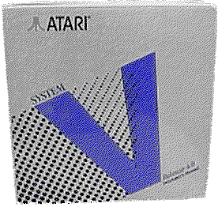

Previous
Next
TOC
Das Atari SVR4 Unix für den TT030
Atari ließ von Unisoft für den TT030 eine Portierung des SVR4 Unix
von AT&T anfertigen. Diese Unix Version läuft ausschließlich auf
dem TT030, der X-Server ausschließlich in der Auflösung TT hoch.
An Speicher müssen 8 MByte RAM (besser mehr) vorhanden sein, wenn
man X11 benutzen will. Minimum ohne X11 sind 4 MByte RAM.

Kapitel Das Atari System V Unix für den TT030, Seite 1